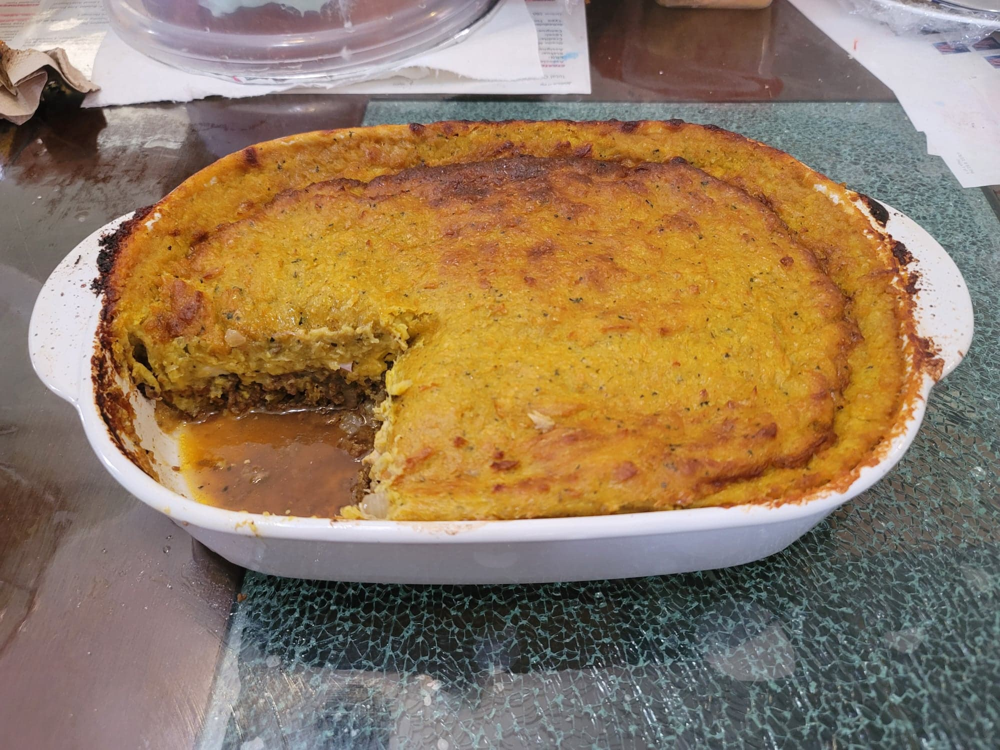

Pastel de Choclo

Ingredients:
Meat filling:
- 2 lb Ground beef, 85-90%
- 2 tbsp Canola oil
- 1 tbsp Merkén or Paprika
- 1 1/2 tsp Salt, or to taste, less if using Merkén
- 1/2 tsp Black pepper
- 1/2 tsp Cumin
- 1 cup Water or Beef broth
- 3 Onions, diced
- 2 tbsp Flour
- Optional: Cooked shredded chicken
- Optional: Hard-boiled egg
- Optional: Black olives, chopped
- Optional: Raisins
Corn topping:
- 4 lb Frozen corn
- 2 tbsp Butter
- 1/2 cup Milk
- 1 tsp Merkén or Paprika
- 1 tsp Salt, or to taste, less if using Merkén
- 1/4 tsp Black pepper
- 1 bunch Basil, about 10 leaves, sliced
- 3 tbsp Cornmeal
Instructions:
- Preheat an oven to 400 degrees Fahrenheit.
- For the meat, heat the canola oil in a very large pan over medium heat. Add the beef and sauté until mostly browned, about 8 minutes. Then add the salt, pepper, cumin, and paprika. Sauté for 2 more minutes. Then add the broth and let simmer over low for 30 minutes.
- After the 30 minutes, add in the diced onions and bring the heat up to medium. Cook for 30 minutes, stirring occasionally.
- Remove the meat from the heat and taste and adjust seasonings. Add in the flour and stir until homogenous.
- For the corn topping, add the butter to a large pot over medium-high heat. Then add in the frozen corn and cook, stirring occasionally, for 8 minutes. Then add in the milk, basil, salt, pepper, and paprika. Continue to cook, stirring occasionally, for about 10 minutes.
- Using an immersion blender, roughly blend together the corn. Stir in the cornmeal and continue to cook over medium heat for 5 minutes. It should be slightly less thick than desired, as it will thicken when cooled. Taste and adjust seasoning.
- To assemble, layer down the ground beef onto the bottom of a 9x13 inch baking dish. Then add any optional fillings like chicken, raisins, olives, or eggs. Then top off the filling with the corn topping and flatten with the back of a spoon. Let bake in a preheated oven for 45-60 minutes or until bubbling and golden on top.. Let rest before serving. Serve hot.